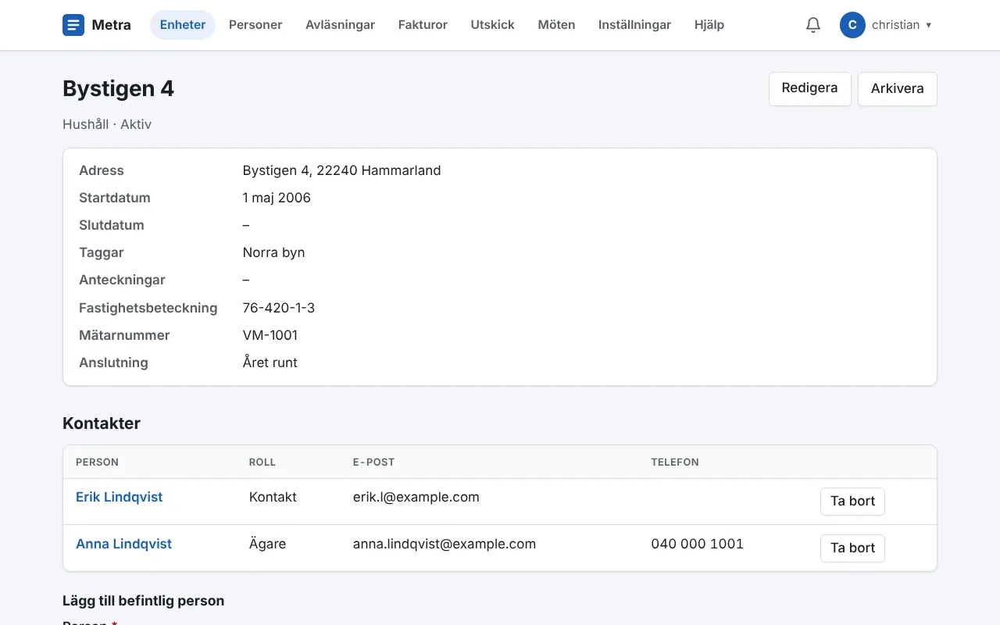

Ett register som passar er
Samla hushåll, fastigheter, båtplatser eller kunder som enheter, med personerna som hör till dem. Ni bestämmer själva vilka sorters enheter ni har och vilka fält de ska ha, till exempel fastighetsbeteckning eller mätarnummer.
- Sök och filtrera på status och taggar
- Importera från och exportera till CSV
- Varje ändring loggas, med vem och när
